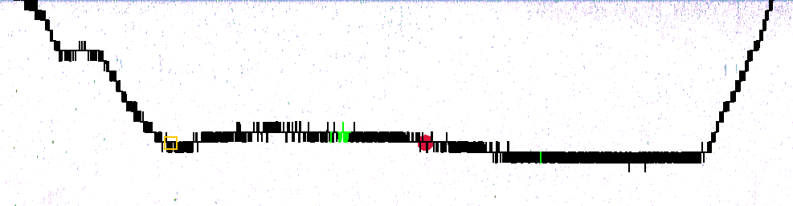

This overlay shows the approximate path of the Deep Vision vessel. The coloring depends on the athwart distance of the Deep Vision path compared to the ship's path. Green indicates starboard, red indicates port, and black indicates that the athwart distance is below a user-specified threshold.
The orange rectangle shows the location of the currently selected Deep Vision frame.
The user can add additional information that can be displayed together with the Deep Vision path information. In the example above, a red filled circle has been defined at one of the Deep Vision frames.
Distance mapping can be configured in the data files configuration.